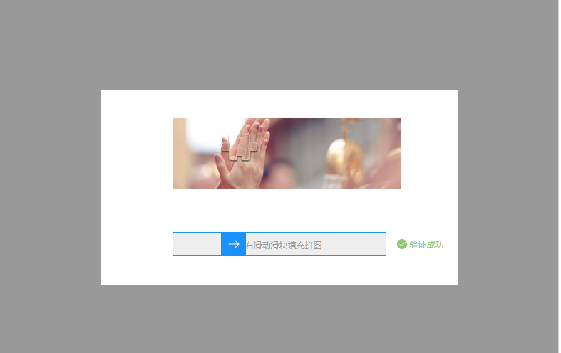
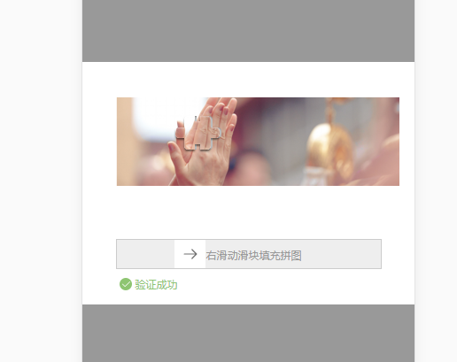

verify 使用文档
- verify是同时支持PC端与移动端的图片拖拽验证，并配合后台使用校验的插件
- verify目前是跟后台配合使用的插件，后期有时间补上其前端自己实现图片的处理
- 效果如下
pc端效果 
移动端效果 
使用方法
- 1.引入verify-1.0.1.js
- 2.使用 verify
let verify = new Verify({
imgUrl: '1.json',
checkUrl: '1.json',
callback: (data) => {
}
});
相关参数
| 参数名 | 说明 | 类型 |
|---|---|---|
| imgUrl | 获取图片资源的请求地址 | string |
| checkUrl | 检查是否通过验证的请求地址 | string |
| callback | 通过验证后的回调函数 | function |
方法
verify.showVerify();
相关说明
- 1.关于后台返回的字段的问题
- 2.请求图片资源返回的参数：{state: 0, data: {bgSrc: '背景图片的src地址', moveSrc:'要移动的图片src地址', posY: '图片距离上面的高度', token: '123456'}, 'msg': 'successs'}
3.请求校验的参数： {left: 102}，返回参数：{state: 0, data: {}, 'msg': 'success'}
4.使用方法showVerify()去显示verify插件